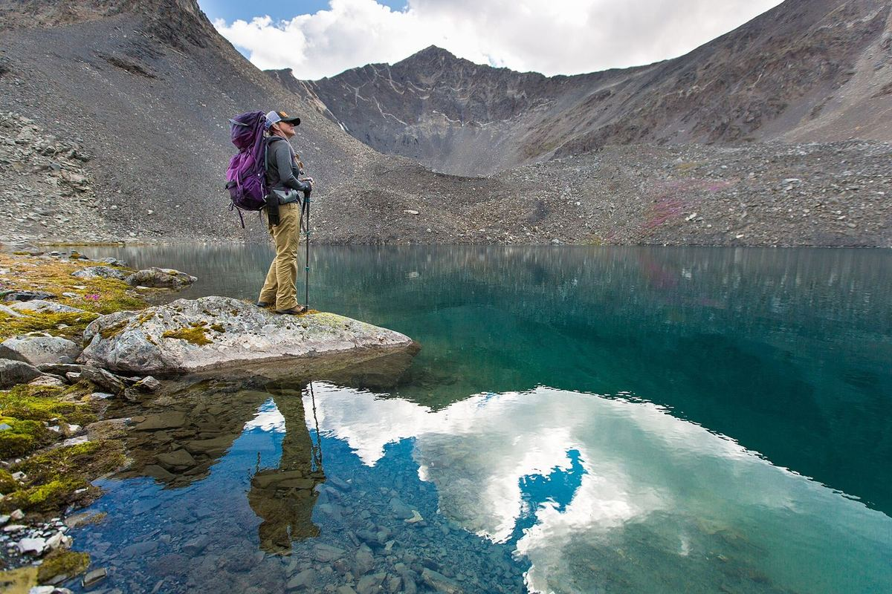
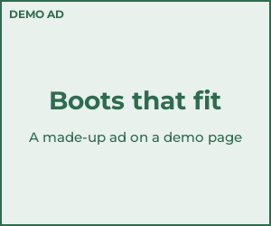

Gear
What's in our packs
After a season of carrying too much, this is the short list that made every trip.
We weigh everything now. Not to chase a number, but because the things that stay home are the things we never missed: the second pot, the spare shoes, the book we were always too tired to read.
The ten that always come
- A paper map and a compass
- Water for the day, and a filter
- A warm layer and a rain shell
- A headlamp with fresh batteries
- A small first aid kit
- Sun hat, sunscreen and sunglasses
- More food than the plan says
- A knife and a little repair tape
- Matches in a dry bag
- An emergency blanket

What we stopped carrying
Camp chairs, a hatchet and anything "just in case" that had gone three trips without leaving the bag. If you're not sure, leave it on the bed and see whether you think about it on the trail.
This page carries six test requests of the kinds ad blockers stop: three banner ads and three trackers, all made up and all served from this demo site. With blocking on you see none of them.